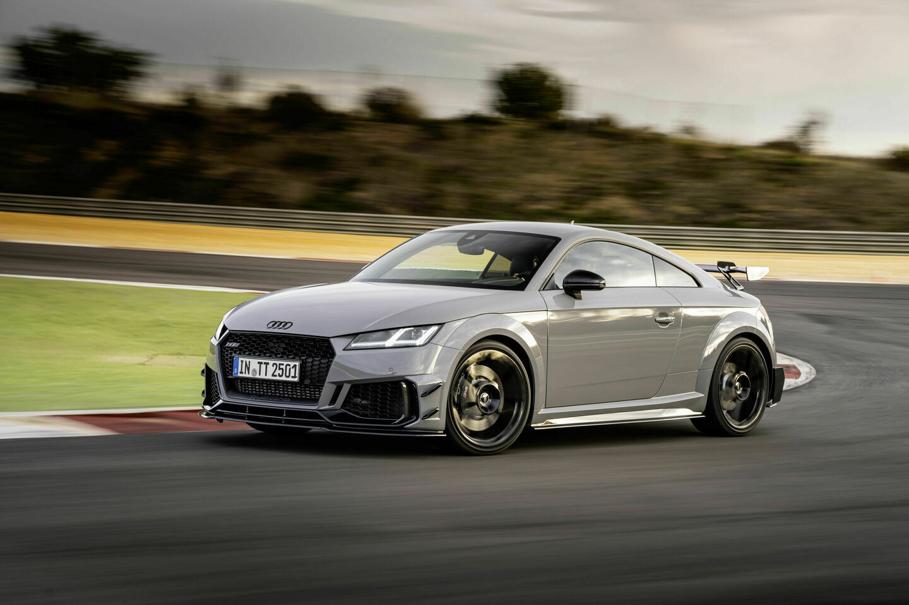

Audi TT

| المحرك | 2.0 لتر TFSI تيربو |
| عدد الأسطوانات | 4 |
| القوة | 245 حصان |
| عزم الدوران | 370 نيوتن متر |
| ناقل الحركة | 7 سرعات S tronic |
| نظام الدفع | رباعي quattro |
| التسارع (0-100) | 5.1 ثانية |
| السرعة القصوى | 250 كم/س |
| عدد المقاعد | 2+2 |
| نوع الوقود | بنزين |
جميع مواصفات Audi TT
← العودة إلى سيارات Audi
| المحرك | 2.0 لتر TFSI تيربو |
| عدد الأسطوانات | 4 |
| القوة | 245 حصان |
| عزم الدوران | 370 نيوتن متر |
| ناقل الحركة | 7 سرعات S tronic |
| نظام الدفع | رباعي quattro |
| التسارع (0-100) | 5.1 ثانية |
| السرعة القصوى | 250 كم/س |
| عدد المقاعد | 2+2 |
| نوع الوقود | بنزين |